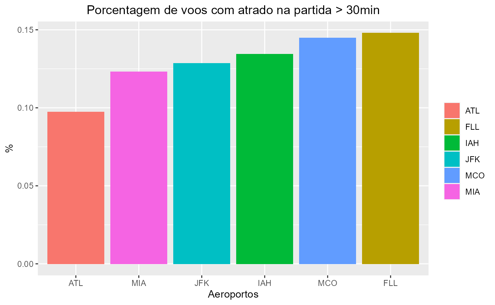
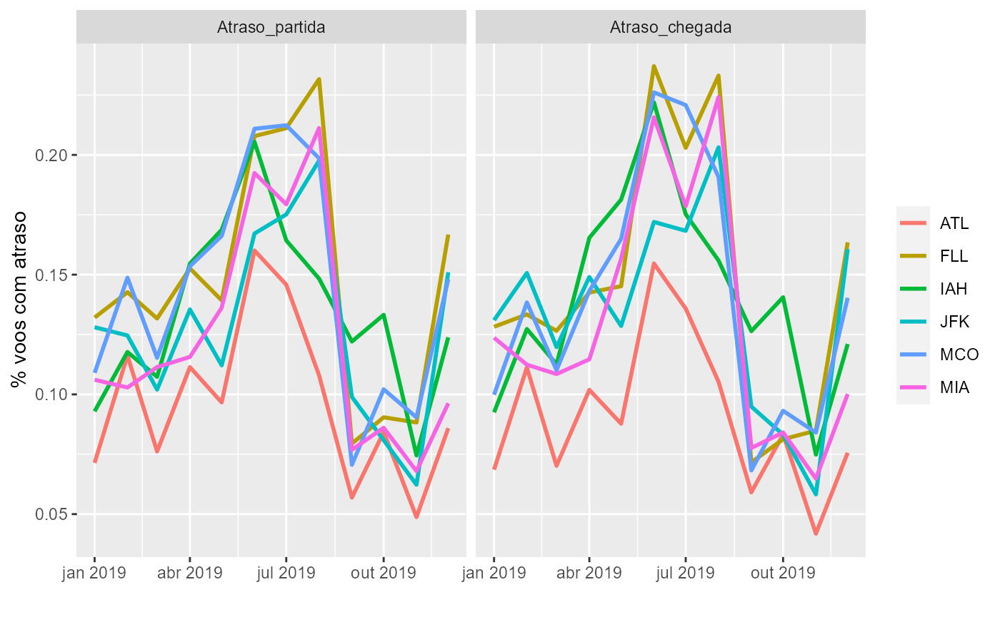
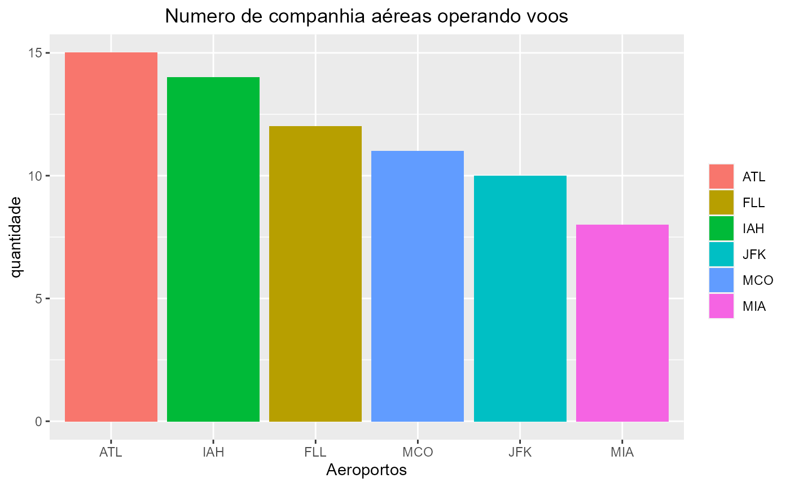
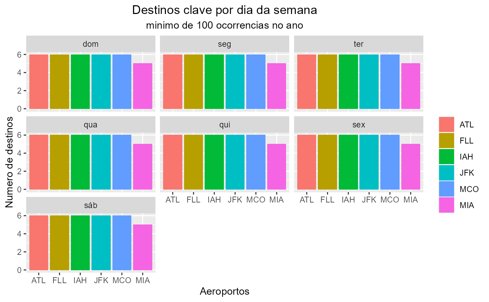

library(tccR4ds2)
#Base de dados
meus_voos %>%
dplyr::glimpse()
#> Rows: 1,018,199
#> Columns: 14
#> $ ano <int> 2019, 2019, 2019, 2019, 2019, 2019, 2019, 2019, 2019, ~
#> $ mes <int> 1, 1, 1, 1, 1, 1, 1, 1, 1, 1, 1, 1, 1, 1, 1, 1, 1, 1, ~
#> $ dia <int> 1, 1, 1, 1, 1, 1, 1, 1, 1, 1, 1, 1, 1, 1, 1, 1, 1, 1, ~
#> $ data <date> 2019-01-01, 2019-01-01, 2019-01-01, 2019-01-01, 2019-~
#> $ semana <dbl> 1, 1, 1, 1, 1, 1, 1, 1, 1, 1, 1, 1, 1, 1, 1, 1, 1, 1, ~
#> $ hora_partida <drtn> 77400 secs, 79740 secs, 85440 secs, 86100 secs, 81480~
#> $ atraso_partida <drtn> 10020 secs, 7740 secs, 2160 secs, 1620 secs, 6360 sec~
#> $ atrasou_partida <lgl> TRUE, TRUE, TRUE, TRUE, TRUE, FALSE, TRUE, TRUE, TRUE,~
#> $ atraso_chegada <drtn> 8700 secs, 7080 secs, 1140 secs, 1440 secs, 6480 secs~
#> $ atrasou_chegada <lgl> TRUE, TRUE, TRUE, TRUE, TRUE, FALSE, TRUE, TRUE, TRUE,~
#> $ companhia <chr> "B6", "B6", "UA", "B6", "DL", "NK", "B6", "B6", "B6", ~
#> $ origem <chr> "JFK", "MCO", "IAH", "MCO", "ATL", "MCO", "FLL", "JFK"~
#> $ destino <chr> "RSW", "PSE", "SJU", "SJU", "PNS", "SJU", "PHL", "SJU"~
#> $ distancia <dbl> 1074, 1179, 2007, 1189, 271, 1189, 992, 1598, 1179, 24~
# Plot atraso
plot_atraso(col = atraso_partida,
title = 'partida > 30min',
atraso_min = lubridate::make_difftime(60*30))
#plot atraso serie
plot_atraso_serie(atraso_min = lubridate::make_difftime(60*30))
# plot count
plot_count(col = companhia , title = 'Numero de companhia aéreas operando voos')
#Destino semana
destinos_semana(destinos = c('SFO', 'LAX', 'LAS', 'BOS', 'IAD','ORD'), min_ocorencias = 100,title = "Destinos clave por dia da semana")